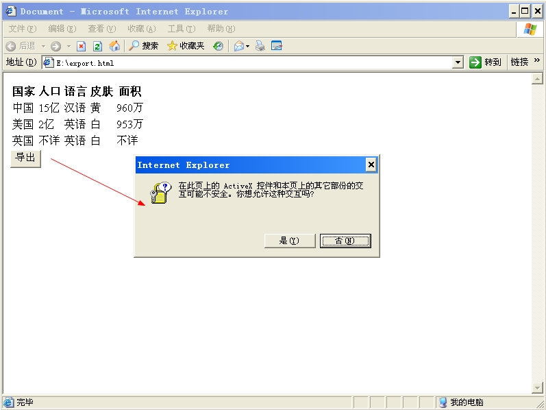
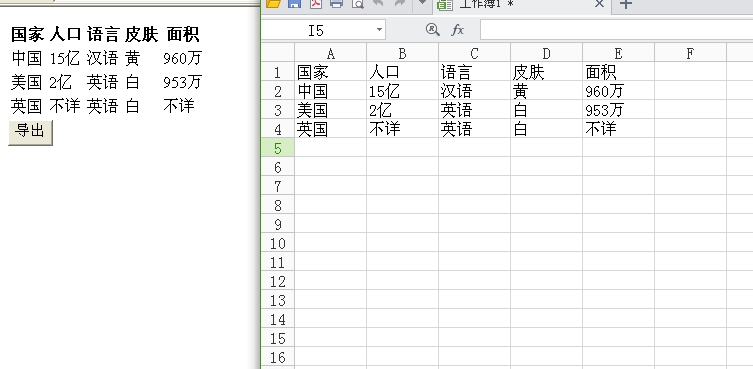
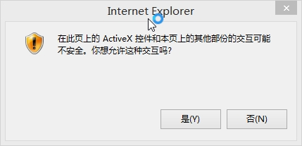
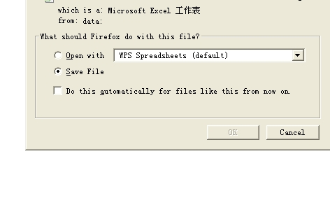

在项目的开发中,时常我们需要将数据库中的数据渲染到页面中。有些时候,我们需要给客户提供下载该页面数据的功能,而我们一般的做法就是在客户点击下载按钮的时候,重新根据条件搜索数据库中的数据,然后后端程序将数据输出到文件中,从而实现下载的功能。
有时候,我们在思考1个问题,我们能否通过Javascript将这些数据导出到excel中呢?
可能大部分开发人员会不假思索的回答,不能。Javascript怎么可能把数据导出到文件中呢。
如果Javascript无法将数据导出到文件中,那么这里就没必要写这篇文章了。当然,单凭Javascript是无法完全做到的,我们还需要借助浏览器这个常常被我们忽略的角色。其实很多东西是它在起关键性作用。
我们首先从IE浏览器说起。这里我们将导出的过程封装成1个函数:
function exportExcel(table_id){
var table = document.getElementById(table_id);
var obj = new ActiveXObject("Excel.Application");
var wb = obj.Workbooks.Add();
var sheet = wb.ActiveSheet;
var len = table.rows.length;
for(i=0;i<len;i++){
var l = table.rows(i).cells.length;
for(j=0j<lj++){
sheet.Cells(i+1,j+1).value = table.rows(i).cells(j).innerText;
}
}
obj.Visible =true;
}这里,我们初始化1个ActiveXObject对象,然后调用该实例的Add方法创建1个Excel表单对象。后面的操作和我们在后端中编写的代码比较类似,只是我们将表格的内容赋值给之前Excel表单对象。
现在假设,我们有这样一段HTML数据:
<style type="text/css">
.tg {border-collapse:collapseborder-spacing:0}
.tg td{font-family:Arial, sans-seriffont-size:14pxpadding:10px 5pxborder-style:solidborder-width:1pxoverflow:hiddenword-break:normal}
.tg th{font-family:Arial, sans-seriffont-size:14pxfont-weight:normalpadding:10px 5pxborder-style:solidborder-width:1pxoverflow:hiddenword-break:normal}
.tg .tg-yw4l{vertical-align:top}
</style>
<table id="tg">
<tr>
<th class="tg-yw4l">国家</th>
<th class="tg-yw4l">人口</th>
<th class="tg-yw4l">语言</th>
<th class="tg-yw4l">皮肤</th>
<th class="tg-yw4l">面积</th>
</tr>
<tr>
<td class="tg-yw4l">中国</td>
<td class="tg-yw4l">15亿</td>
<td class="tg-yw4l">汉语</td>
<td class="tg-yw4l">黄</td>
<td class="tg-yw4l">960万</td>
</tr>
<tr>
<td class="tg-yw4l">美国</td>
<td class="tg-yw4l">2亿</td>
<td class="tg-yw4l">英语</td>
<td class="tg-yw4l">白</td>
<td class="tg-yw4l">953万</td>
</tr>
<tr>
<td class="tg-yw4l">英国</td>
<td class="tg-yw4l">不详</td>
<td class="tg-yw4l">英语</td>
<td class="tg-yw4l">白</td>
<td class="tg-yw4l">不详</td>
</tr>
</table>需要注意的是,当前运行的系统中必须已经安装了Office套件,比如WPS Office。
然后我们点击导出按钮,将当前表单的id传递给exportExcel函数,即可打开1个Excel文件,显示其内容了。在这个过程中,IE浏览器会弹出1个对话框来询问我们是否进行这个操作。
这里,我们在虚拟机中运行IE6,我们可以看到这样的1个情况:

当个我们点击确定后,出现如下的页面:

而在IE10下,弹出这样1个对话框:

说完了IE的情况,你可能会说,那其他厂商的浏览器怎么办,比如Firefox、Chrome,它们怎么办好呢。
不用急,我们可以使用1个jquery的插件tableExport。
我们可以将这个插件从git上下载下载。
这个插件比较强大,支持导出表单内容为JSON、XML、PNG、SQL、PDF、TXT等。这里我们克隆1份下来:
cat@yafeile-pc:~$ git clone https://github.com/kayalshri/tableExport.jquery.plugin.git
Cloning into "tableExport.jquery.plugin"...
remote: Counting objects: 120, done.
remote: Total 120 (delta 0), reused 0 (delta 0), pack-reused 120
Receiving objects: 100% (120/120), 477.28 KiB | 34.00 KiB/s, done.
Resolving deltas: 100% (28/28), done.
Checking connectivity... done.然后我们在页面中导入以下几个文件:
<script src="jquery-1.7.2.min.js"></script>
<script src="jquery.base64.js"></script>
<script src="tableExport.js"></script>然后我们为点击的按钮添加点击是事件,其代码为:
<button onclick="$("tg").tableExport({type:"excel",escape:"false"})">导出</button>这里我们通过type参数指定其类型,由于这里我们要导出的是excel,因为这里填写为excel。
当我们点击导出按钮时,将弹出通常下载的对话框,如下所示:

这样,我们便实现了使用Javascript导出excel的目的了。